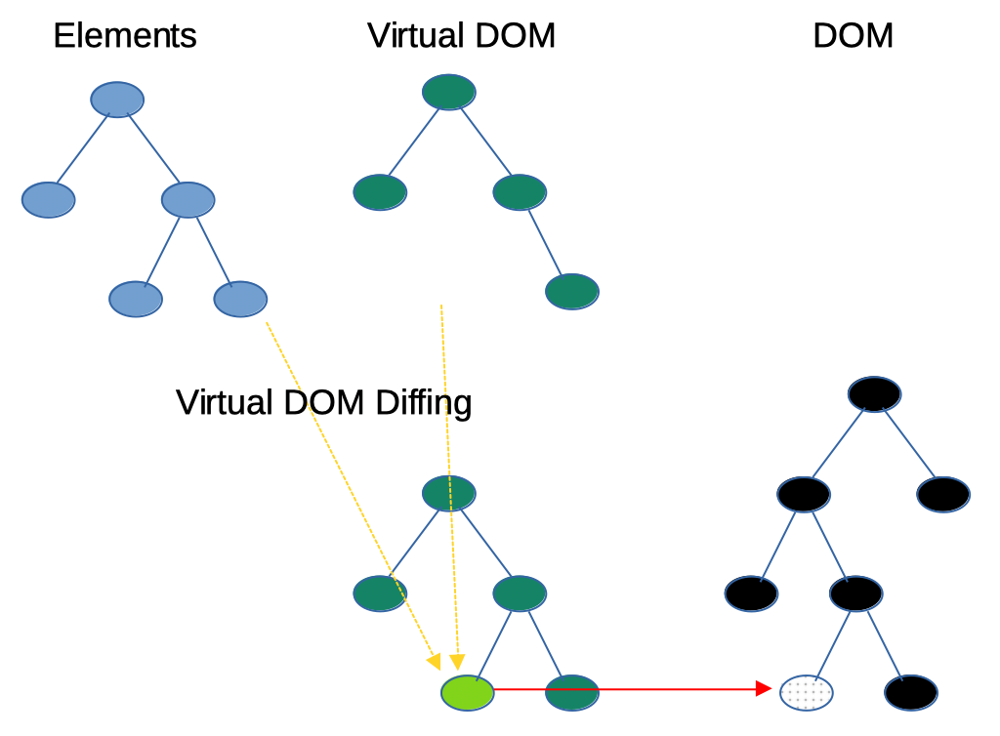
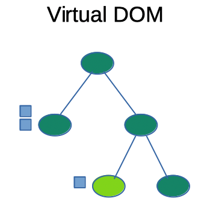

Remi Forax
“ Front-end JavaScript library for building user interfaces based on UI components. React can be used as a base in the development of single-page, mobile, or server-rendered applications ... However, React is only concerned with state management and rendering that state to the DOM ...”
source: Wikipedia.org - React
“Bibliothèque cliente JavaScript pour créer des interfaces utilisateur à base de composants. React peut être utilisé comme base pour le développement d'applications Web à page unique, sur mobile ou générées coté serveur. React s'occupe uniquement de la gestion des états et de l'affichage ces états sur l'arbre DOM... ”
source: Wikipedia.org - React
| React 0.3.0 | 2013 |
| React 15 (ex 0.15.0) | 2016 |
| React 16.8 (Hooks) | 2019 |
| React 18 | 2022 |
createRoot(domNode)
demande à React de gérer le nœud du DOM
render(element)
affiche l'élément JSX en tant que fils de la racine
<div id="react-simple"></div>
Permet d'écrire du HTML comme une expression JavaScript
On utilise '{' et '}' pour insérer une expression JavaScript dans le JSX
Nécessite un pré-processeur sur le code comme Babel ou esbuild
Le JSX est transformé en appel à
React.createElement(type, props, ...children)
"props" veut dire properties !
Installation de esbuild en utilisant npm
npm install --save-exact --save-dev esbuild
Transpilation de JSX vers JS
./node_modules/.bin/esbuild toto.jsx --bundle --outfile=toto.js
L'option --watch permet de rebuilder automatiquement
On déclare un composant réutilisable avec une fonction
JSX fait la différence entre une fonction ou un tag HTML avec les majuscules !
Comme un composant peut avoir n'importe quel nom,
il existe une syntaxe pour "auto-fermer" une balise.
Cette notation vient du XHTML
Les attributs JSX sont transformés en Objet ("props") pris en paramètre de la fonction
On utilise plutôt l'attribut DOM "className" que "class" pour spécifier la classe CSS
.tomato {
color: tomato;
background-color: blue;
}
Il existe une syntaxe spéciale (<> et </>) pour encapsuler plusieurs éléments et les renvoyer comme un seul élément
JSX a une syntax spécial pour afficher de façon conditionnelle
condition && <Whatever/>
Le DOM virtuel est une copie du DOM qui utilise des objets JS plutôt que des objets C++

Lors d'un render(element), React regarde la différence entre l'arbre des élements
et le DOM virtuel
Puis, React applique uniquement les changements sur le DOM !
Le code ci-dessous à un problème (cf la console)
Warning: Each child in a list should have a unique "key" prop.
React demande un attribut "key" pour tracker les items au niveau du DOM virtuel
Doit être unique, permet de savoir quels items changent
Les attributs "key" doivent être stables !
useState(initial) renvoie un tableau contenant la valeur actuelle (ou la valeur initiale si c'est la première fois) et une fonction qui met à jour la valeur et l'UI
React a sa propre gestion des évènements donc "onClick" au lieu de "onclick"
Chaque composant a son propre état
Note: let [a,b] = c <=> let a = c[0]; let b = c[1]
La fonction de mise à jour peut prendre une lambda en paramètre (oldValue => newValue)
On utilise les props si on veut configurer les composants avec des valeurs différentes.
Note: let {a,b} = c <=> let a = c.a; let b = c.b
Les states hooks sont stockés dans un tableau associé à chaque nœud du DOM virtuel
Tant qu'un nœud n'est pas supprimé l'état persiste
Le composant parent peut envoyer sa fonction de mise à jour (set...) en tant que props des composants enfants
Cette technique est appelé render props
useEffect(lambda, [val1, val2, etc]) execute la lambda après qu'une des valeurs ait changé
Si on ne spécifie pas de valeurs, on exécute l'effet à chaque fois !
useEffect(lambda, []), si on spécifie un tableau vide, l'effet est exécuté une fois à la création, une fois à la destruction
On met à jour en fonction du résultat de l'appel à fetch()
On utilise useEffect(function, [])
useEffect() ne permet pas les fonctions async, il faut passer setData en paramètre
(Ancienne façon de faire)
Les "props" sont passés à la construction. L'appel à super() les stocke dans "this.props".
render() est appelée pour l'affichage.
setState(object) prend un objet en paramètre, recopie tous les champs dans "this.state" puis change l'UI
si on change "this.state" au lieu de setState, l'UI est pas mise à jour !
On écrit la gestion des évènements dans une méthode pour que le code soit plus lisible
Ou on utilise "bind(this)"
Comme avec un state hook, setState peut prendre une méthode de mise à jour en paramètre
Attention, lorsque l'on retourne un objet dans une lambda, il faut des parenthèses !
componentDidMount() est appelée lorsque l'objet du DOM correspondant est créé.
componentWillUnmount() est appelée lorsque l'objet du DOM disparait.
Chaque mise à jour du DOM appelle componentDidUpdate()
(sauf la première qui utilise componentDidMount)
useEffect = componentDidMount + componentDidUpdate